User guide
View any customer organization's mParticle custom roles, see exactly what each one grants, and create, edit, or delete them safely.
Contents
Everything you need to run the app, connect a customer organization, and change roles without risk. If you only read one section, make it 04 — it explains why the app always shows you a diff before writing anything.
mParticle has no "update one role" endpoint. Every save replaces the organization's entire role list, so a role left out is a role deleted. This app never lets that happen by accident: it rebuilds the full list for you, shows you a diff, and only writes after you confirm it.
001
Custom Roles Manager is an internal tool for the Solutions team. It talks to the mParticle Custom Roles API on behalf of a customer organization so you can audit and change custom roles without hand-writing API calls.
These are limits of the mParticle API, not the app.
| Task | Where to do it instead |
|---|---|
| Assign a role to a user | mParticle UI — Settings → User Management. There is no API for assignment. |
| See which users hold a role | mParticle UI. The API never exposes role membership. |
| Look up an organization or account ID | Read them from the API Credential dialog in the mParticle UI. |
| Reproduce a standard role exactly | Some built-in role permissions have no matching task ID, so custom equivalents are approximations. |
002
Clone the repository, then from the project folder:
npm install npm run dev
That starts two things: the interface on http://localhost:5173 and a small
local server on 127.0.0.1:8931 that holds your credentials and makes the API
calls. Both run on your machine only — nothing is hosted, and the local server refuses
connections from anywhere else.
To explore the app without any customer credentials, run
npm run dev:mock instead. It serves a fake organization with sample roles.
Every screenshot in this guide was taken that way.
Browsers can't call the mParticle API directly, and a client secret sitting in page JavaScript would be readable by anyone with developer tools open. The local server keeps secrets out of the browser entirely.
003
On first run you choose a passphrase. It encrypts a single file,
data/vault.enc.json, holding the credentials for every customer organization
you add (AES-256-GCM, key derived with scrypt).
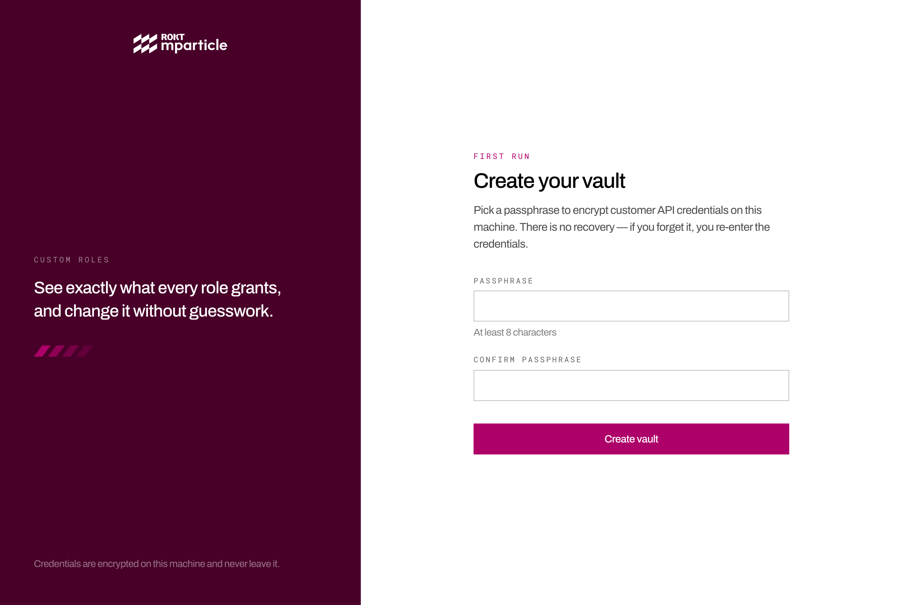
Forget the passphrase and the credentials are unrecoverable — delete
data/vault.enc.json and add the environments again. Nothing else is lost.
The vault locks itself after 30 idle minutes, and you can lock it any time with Lock vault in the top-right. Locking wipes the decrypted credentials and access tokens from memory and returns you to the passphrase screen; nothing on disk is deleted.
004
Each customer is an "environment". Open Environments and choose Add environment.
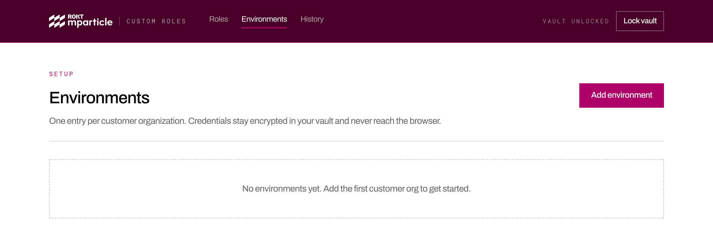
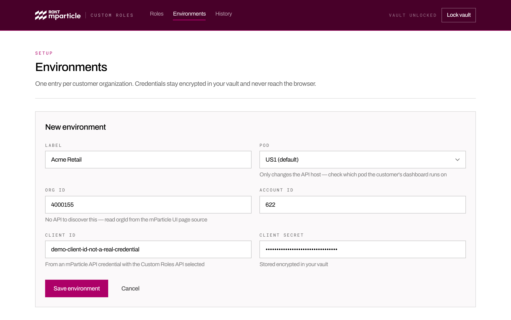
The pod is the mParticle region the customer runs on. Check their dashboard URL: US1 is
app.mparticle.com, and the others are prefixed, for example
app.eu1.mparticle.com. Picking the wrong pod is the most common cause of a
failed connection.
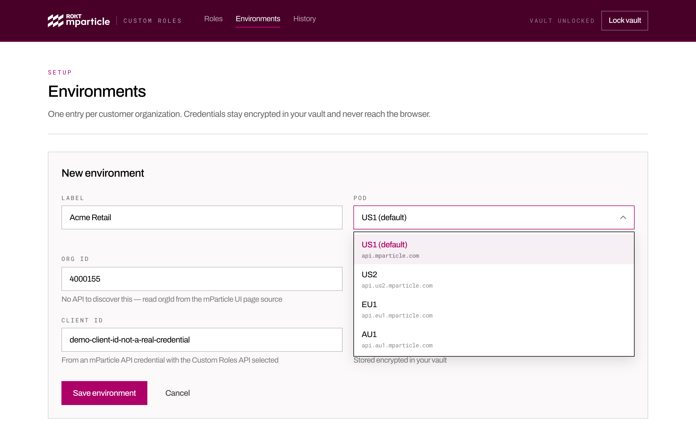
Save, then choose Test connection. A successful test confirms the credentials work, the pod is right, and the credential is provisioned for the Custom Roles API. The stored secret is only ever shown masked.
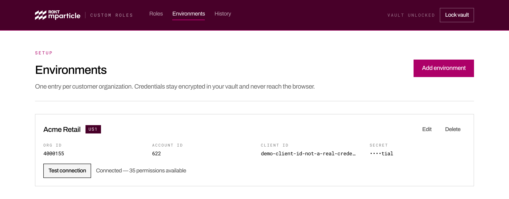
005
Roles lists every custom role in the selected organization, read live from mParticle each time you open it. The meter tracks the 100-role limit, and the header shows who last changed the roles and when.
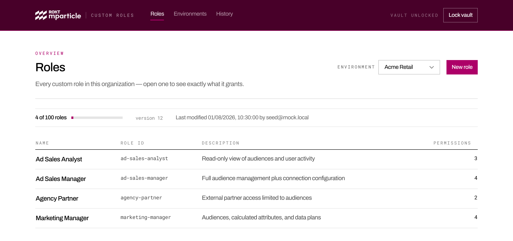
Select any role name to open it in the editor, where every permission it grants is listed. New role, beside the environment picker, opens the editor empty — you never have to enter an existing role to start a new one.
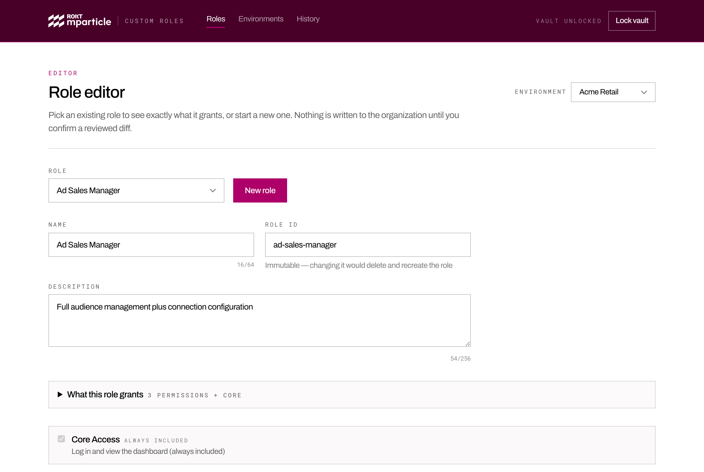
For a quick answer to "what can someone with this role actually do?", expand What this role grants.
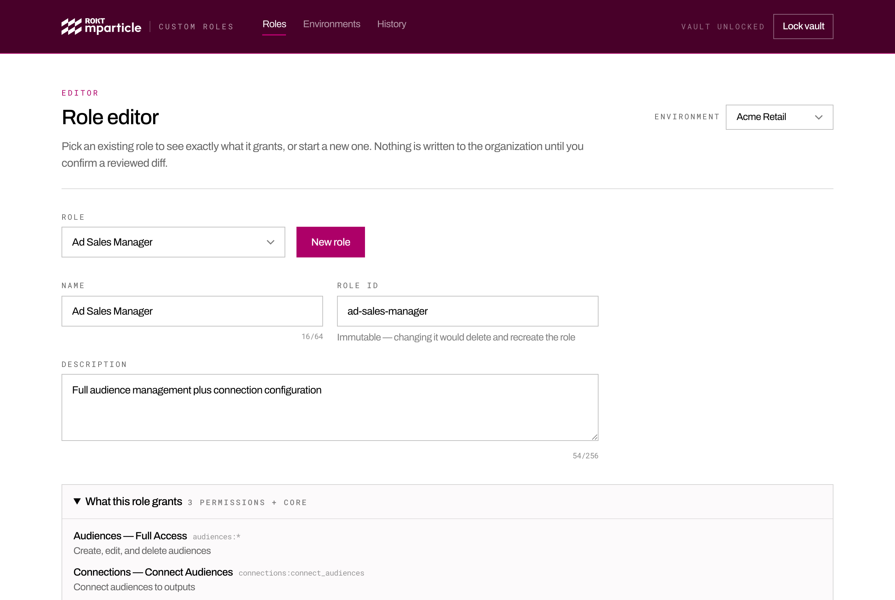
Permissions are grouped the way the platform itself works — data comes in, gets connected, powers features, and is administered:
| Section | Covers |
|---|---|
| 001 Data Ingestion | Warehouse Sync connections and data models |
| 002 Connections & Integrations | Inputs, outputs, integrations, data filters |
| 003 Data Platform & Quality | Data plans, rules, catalog, live stream |
| 004 Identity & Customer 360 | User activity, calculated attributes, household reach |
| 005 Audiences & Activation | Real-time and composable audiences, journeys |
| 006 Oversight & Privacy | Privacy settings, data subject requests, observability |
| 007 Platform Administration | Workspaces, users, API credentials, identity settings, billing |
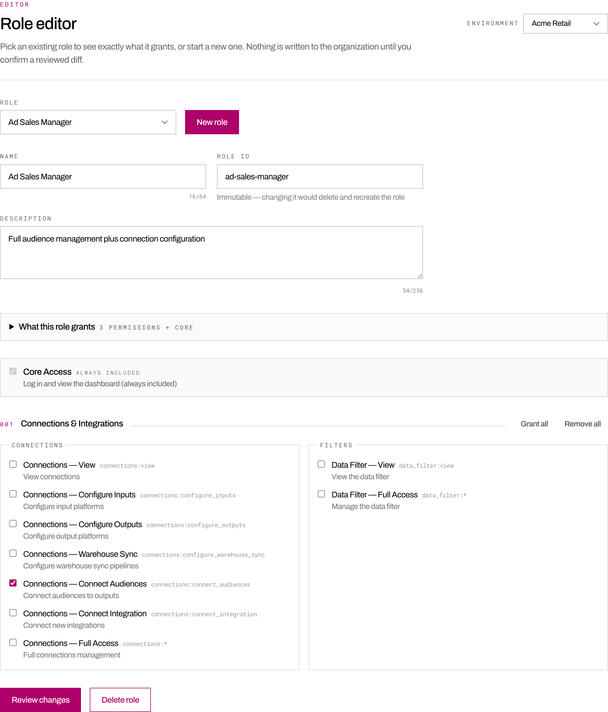
Each section header carries Grant all and Remove all. Grant all ticks every permission in that section; Remove all clears them. Both act on that section only — the rest of the role is untouched.
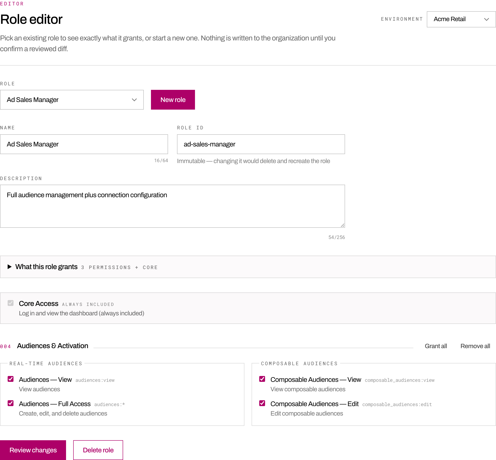
Grant all is literal: View, Edit, and Full access all end up ticked, which is redundant but is exactly what you asked for and exactly what the diff will show. Ticking boxes individually behaves differently — there, choosing Full access clears the narrower options for that feature, since it already covers them.
Core access is always included. Every mParticle role can log in and view the dashboard, so that permission is shown ticked and locked. Roles also carry a few view-only extras with no separate toggle: system alerts, the Event Forwarding report, Data Master Catalog viewing, the Integrations Directory, and workspace access.
A handful of permissions exist in the API but have no published description from mParticle. They're labelled unverified, and their wording here is inferred from the product area. Confirm the exact scope in the mParticle UI before granting one to a customer.
006
Start from New role — either on the Roles screen or here in the editor — or pick an existing role from the Role dropdown to edit it.
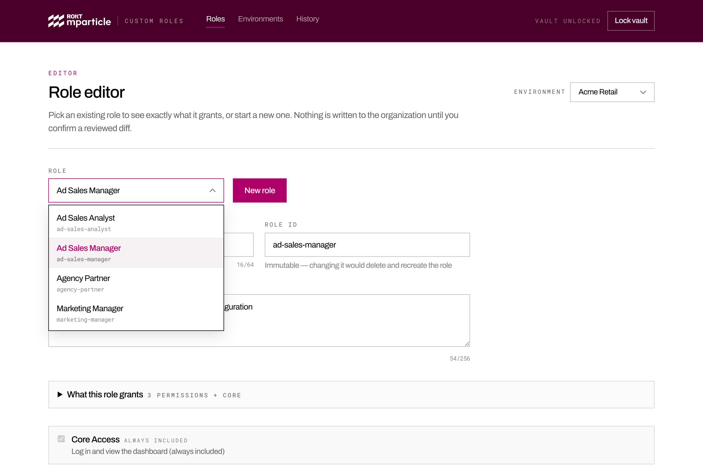
Character counts sit under each field and turn Beetroot if you go over the limit. Names must be unique in the organization, and the Role ID of an existing role can't be edited — changing it would delete that role and create a different one.
Nothing is written until you confirm. The app fetches the organization's current roles, applies your change to them, and shows you exactly what will differ.
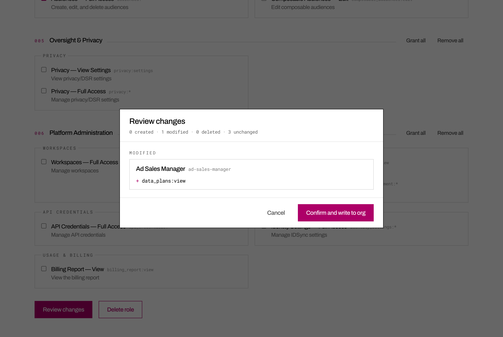
Choose Confirm and write to org to apply it. If someone else changed the organization's roles while you were reviewing, the write is refused and you're shown a refreshed diff instead — your change is never silently applied on top of theirs.
007
Open the role and choose Delete role. Because deletions are permanent and organization-wide, you must tick the acknowledgement before the confirm button becomes available.
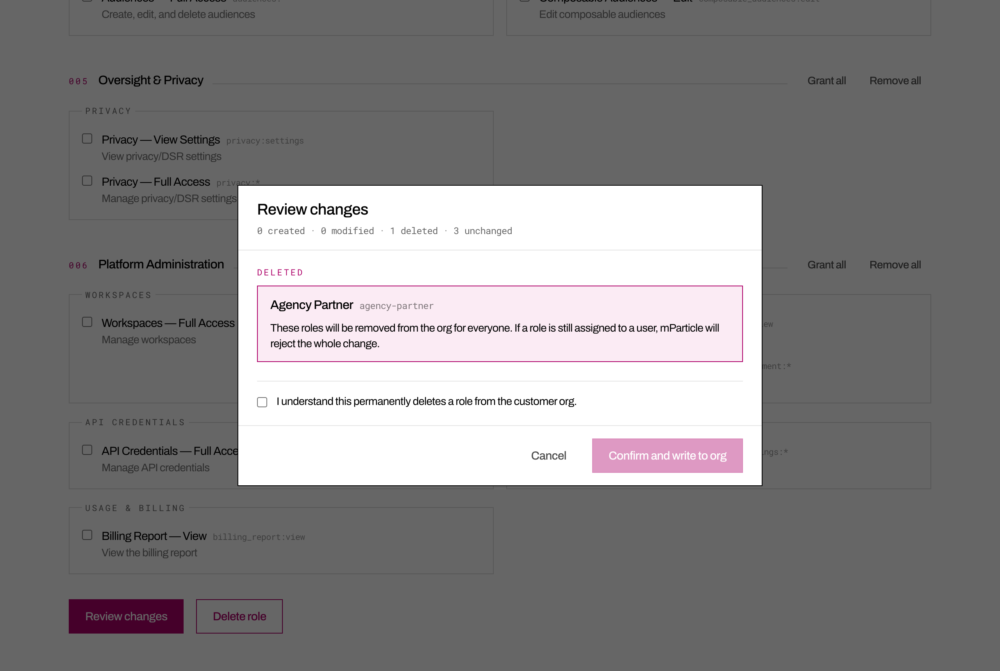
mParticle refuses to delete a role that is still assigned to a user, and the whole change is rejected — nothing is modified. Unassign the role in the mParticle UI (Settings → User Management), then try again. There is no API for unassignment.
008
History records every change this app has written for the selected environment, plus a snapshot of the organization's roles from the first time you opened it.
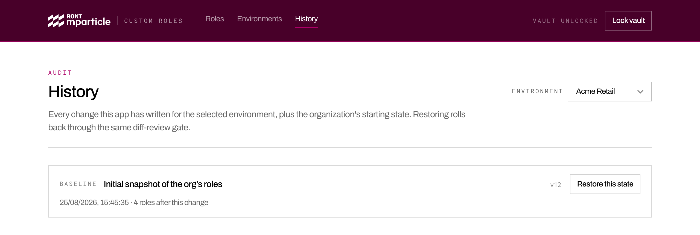
Restore this state rebuilds the roles exactly as they were in that snapshot. It goes through the same diff review as any other change, so you see precisely what restoring would add back or remove before it happens.
History is stored on your machine, in data/history/. It records what this app
did — changes made in the mParticle UI or by another teammate's copy won't appear.
009
| What you see | What to do |
|---|---|
| Credentials rejected | The client ID or secret is wrong, or the credential was deleted in mParticle. Re-check them on the environment, or issue a new credential. |
| 403 or 404 from mParticle | Usually the wrong pod, wrong organization or account ID, or a credential without Custom Roles access. Check the pod first. |
| Role is assigned to a user | Unassign it in the mParticle UI, then delete again. Nothing was changed. |
| A role with this name already exists | Names must be unique in the organization. Pick a different one. |
| Rate limit reached | mParticle allows 100 requests a minute. Wait the number of seconds shown and retry. |
| Roles changed since you reviewed | Someone edited the organization while you had the diff open. Review the refreshed diff and confirm again. |
| Local server unreachable | The local server isn't running. Start it with npm run dev and choose Retry. |
| Back at the passphrase screen | The vault locked, either from 30 idle minutes or because you locked it. Enter your passphrase to continue. |
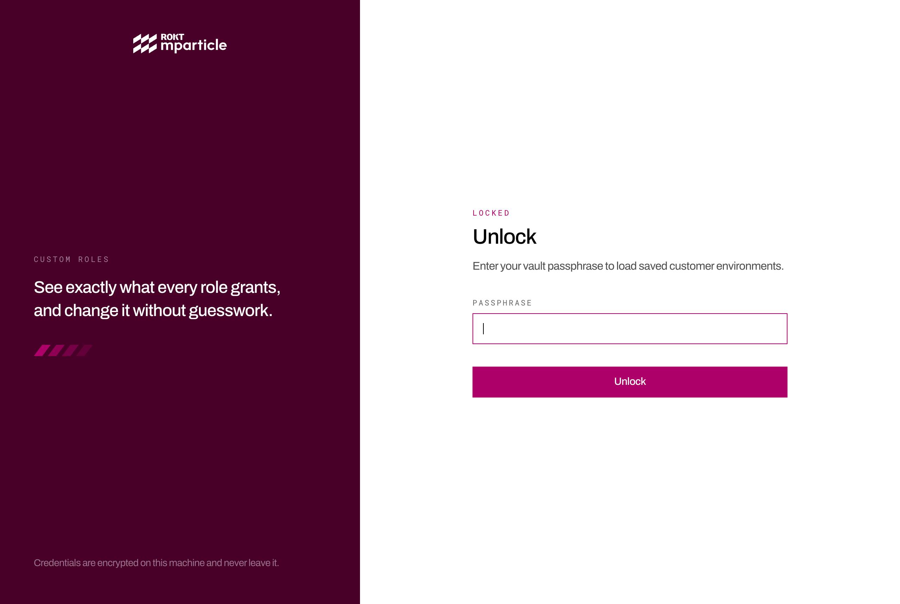
010
127.0.0.1 and is unreachable from the network.data/.Each person runs their own copy with their own vault and their own mParticle credentials. Never share a vault file or a passphrase.